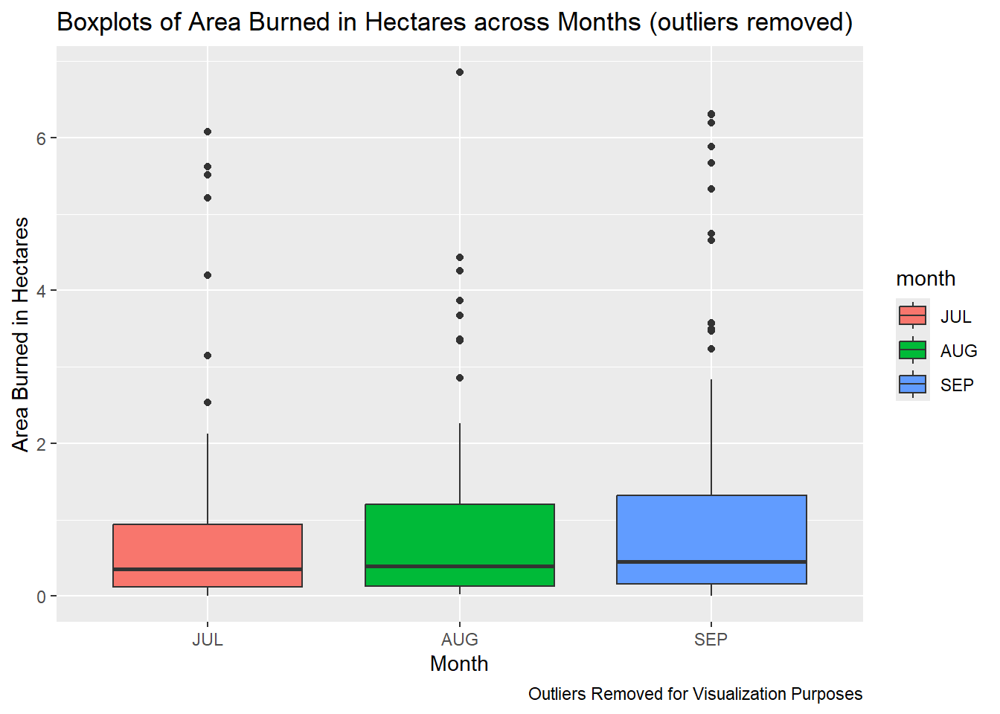
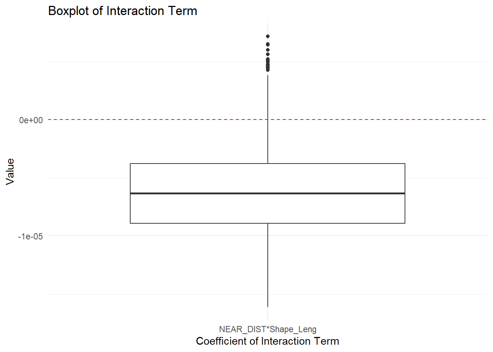
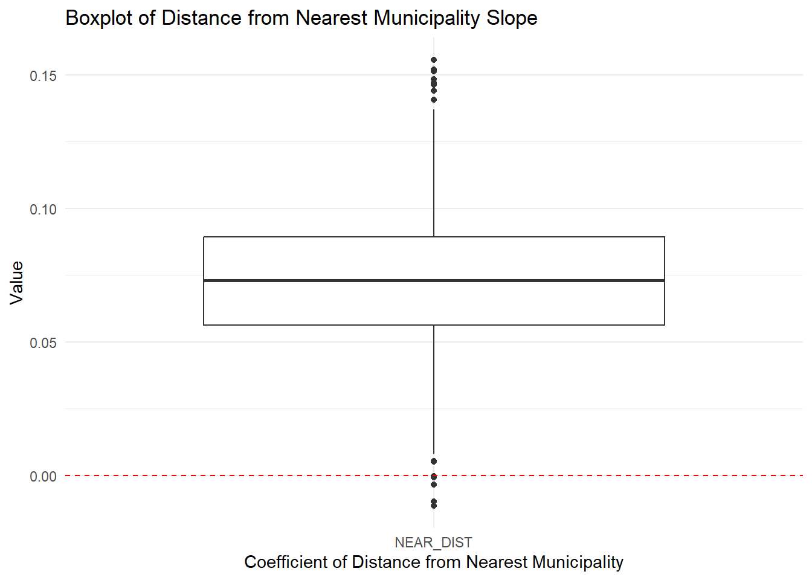
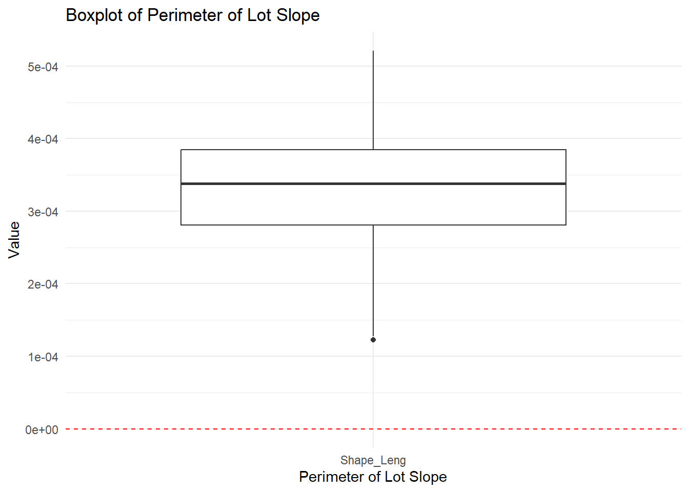

── Conflicts ────────────────────────────────────────── tidyverse_conflicts() ──
✖ dplyr::filter() masks stats::filter()
✖ dplyr::lag() masks stats::lag()
✖ dplyr::select() masks MASS::select()
ℹ Use the conflicted package (<http://conflicted.r-lib.org/>) to force all conflicts to become errors
library(stargazer)
Please cite as:
Hlavac, Marek (2022). stargazer: Well-Formatted Regression and Summary Statistics Tables.
R package version 5.2.3. https://CRAN.R-project.org/package=stargazer
library(ggplot2)# Reading in the datadata <-read_csv("actual_data_merge (1).csv")
New names:
Rows: 1282 Columns: 56
── Column specification
──────────────────────────────────────────────────────── Delimiter: "," chr
(3): Name, Category, geometry dbl (52): ...1, ID, NEAR_DIST, Interview,
Shape_Leng, Shape_Area, Region, AU... lgl (1): JUL_2023
ℹ Use `spec()` to retrieve the full column specification for this data. ℹ
Specify the column types or set `show_col_types = FALSE` to quiet this message.
• `` -> `...1`
# Now we will calculate the total fires across the dummy rowsrowsums <- data |>select(27:40) |>mutate(total =rowSums(across(everything()), na.rm =TRUE))data$total_fires <- rowsums$total
Here we will add a new variable called “fire” into the data set. This variable will be a 1 if at least one fire occurred in the area and will be a 0 if no fires occurred. Due to this variable following a bernoulli distribution we will name our data bernoulli.
# adding the fire variable which takes the value 1 if at least 1 fire occured in the observation.bernoulli <- data |>mutate(fire =ifelse(total_fires >0,1,0))# this data is titled bernoulli due to the addition of the 'bernoulli' variable fire.
Now we will analyze this data with the “fire” variable added to the data set.
Data Analysis
Tables
Count of fire occurrence by region
region_fire <-table(bernoulli$Region, bernoulli$total_fires)dimnames(region_fire) <-list("Region"=c("1", "2", "3"),"Number of fires across the years per plot"=c("0","1", "2","3","4","5","6","7","8","9","10"))region_fire
Number of fires across the years per plot
Region 0 1 2 3 4 5 6 7 8 9 10
1 291 45 18 9 4 1 1 2 3 1 1
2 417 49 7 3 1 0 1 0 0 0 0
3 367 34 13 8 2 1 0 2 1 0 0
Counts of Region and Category
data3 <- bernoullitable(data3$Region, data3$Category, dnn=c("Region","Name of Category"))
Name of Category
Region Agropolis Agrovila Crossroad Ruropolis
1 39 267 70 0
2 69 404 5 0
3 55 326 8 39
Bar Graphs
df <-as.data.frame(region_fire)
ggplot(df, aes(x = Number.of.fires.across.the.years.per.plot, y = Freq, fill = Region)) +geom_bar(stat ="identity") +labs(title ="Number of fires per plot, separated by region",x ="Number of fires per plot",y ="Frequency") +facet_wrap(~ Region)
As we can see, this data has a lot of observations with 0 fires, we will remove these to better see the distribution of counts of fires per plot by region.
# Filtering to remove the count of 0 fires per regiondf_no_0_fires <- df[-(1:3),]
ggplot(df_no_0_fires, aes(x = Number.of.fires.across.the.years.per.plot, y = Freq, fill = Region)) +geom_bar(stat ="identity") +labs(title ="Number of fires per plot, separated by region (removing counts for 0 fires)",x ="Number of fires per plot",y ="Frequency") +facet_wrap(~ Region)
Here we can see Region 1 had a lower count of plots with 1 fire over the years compared to Region 2, however it has more occurrences of plots that had several fires throughout the years.
# Grouping by region, year, and month and filtering each yearmonth_summary <- pivot |>group_by(Region,year,month) |>summarize(mean_area_burned =round(mean(area_burned, na.rm =TRUE), 2))
`summarise()` has grouped output by 'Region', 'year'. You can override using
the `.groups` argument.
`summarise()` has grouped output by 'Region'. You can override using the
`.groups` argument.
For this table, we will look at the average area burned each year in each region, averaged over all 3 months.
stargazer(year_summary, type ="text", title ="Averaged Area Burned in Hectares for Each Year Through All Months by Region", digits =2, summary =FALSE, rownames =FALSE, out ="yearaverages.txt")
Averaged Area Burned in Hectares for Each Year Through All Months by Region
============================
Region year mean_area_burned
----------------------------
1 2019 5.26
1 2020 7.12
1 2021 2.18
1 2022 2.47
1 2023 0.59
2 2019 5.89
2 2020 5.53
2 2021 0.67
2 2022 2.6
2 2023 2.49
3 2019 7.92
3 2020 9.16
3 2021 7.31
3 2022 8.66
3 2023 5.39
----------------------------
Next, we will look at the average area burned by month in 2019.
stargazer(month_summary_2019, type ="text", title ="Averaged Area Burned in Hectares per Region and Month in 2019", digits =2, summary =FALSE, rownames =FALSE, out ="2019table.txt")
Averaged Area Burned in Hectares per Region and Month in 2019
==================================
Region year month mean_area_burned
----------------------------------
1 2019 1 0.83
1 2019 2 12.57
1 2019 3 4.12
2 2019 1 0.47
2 2019 2 16.06
2 2019 3 0.97
3 2019 1 7.89
3 2019 2 10.32
3 2019 3 5.92
----------------------------------
Here we will look at the average area burned in 2020.
stargazer(month_summary_2020, type ="text", title ="Averaged Area Burned in Hectares per Region and Month in 2020", digits =2, summary =FALSE, rownames =FALSE, out ="2020table.txt")
Averaged Area Burned in Hectares per Region and Month in 2020
==================================
Region year month mean_area_burned
----------------------------------
1 2020 1 2.01
1 2020 2 0.1
1 2020 3 9.35
2 2020 1 0.24
2 2020 2 0.46
2 2020 3 6.08
3 2020 1 0.79
3 2020 2 4.13
3 2020 3 10.7
----------------------------------
Next, we will look at 2021, 2022, and 2023.
stargazer(month_summary_2021, type ="text", title ="Averaged Area Burned in Hectares per Region and Month in 2021", digits =2, summary =FALSE, rownames =FALSE, out ="2021table.txt")
Averaged Area Burned in Hectares per Region and Month in 2021
==================================
Region year month mean_area_burned
----------------------------------
1 2021 1 1.94
1 2021 2 6.93
1 2021 3 1.64
2 2021 1 0.05
2 2021 2 NaN
2 2021 3 2.52
3 2021 1 6.89
3 2021 2 7.53
3 2021 3 NaN
----------------------------------
stargazer(month_summary_2022, type ="text", title ="Averaged Area Burned in Hectares per Region and Month in 2022", digits =2, summary =FALSE, rownames =FALSE, out ="2022table.txt")
Averaged Area Burned in Hectares per Region and Month in 2022
==================================
Region year month mean_area_burned
----------------------------------
1 2022 1 4.32
1 2022 2 1.68
1 2022 3 2.48
2 2022 1 0.12
2 2022 2 2.44
2 2022 3 2.75
3 2022 1 3.36
3 2022 2 3.34
3 2022 3 21.93
----------------------------------
stargazer(month_summary_2023, type ="text", title ="Averaged Area Burned in Hectares per Region and Month in 2023", digits =2, summary =FALSE, rownames =FALSE, out ="2023table.txt")
Averaged Area Burned in Hectares per Region and Month in 2023
==================================
Region year month mean_area_burned
----------------------------------
1 2023 1 NaN
1 2023 2 0.15
1 2023 3 0.89
2 2023 1 NaN
2 2023 2 0.35
2 2023 3 3.2
3 2023 1 NaN
3 2023 2 0.9
3 2023 3 9.88
----------------------------------
Average hectare of burned area, grouped by region, over time.
ggplot(year_summary, aes(x = year, y = mean_area_burned, color = Region, group = Region)) +geom_point(size =3) +geom_line() +labs(title ="Average Area Burned per Year, Grouped by Region",y ="Mean Area Burned in Hectares",x ="Year")
ggplot(month_summary, aes(x = month, y = mean_area_burned, color = year, group = year)) +geom_point(size =3) +geom_line() +facet_grid(year ~ Region) +labs(title ="Average Area Burned in Hectares per Month, Grouped by Year and Region",y ="Mean Area Burned in Hectares",x ="Month")
Warning: Removed 5 rows containing missing values or values outside the scale range
(`geom_point()`).
Warning: Removed 2 rows containing missing values or values outside the scale range
(`geom_line()`).
Boxplots
pivot_filtered <- pivot |>filter(!is.na(area_burned))ggplot(pivot_filtered, aes(x = Region, y = area_burned, fill = Region)) +geom_boxplot() +facet_wrap(~ year) +labs(title ="Boxplots of Area Burned across Regions and Years",y ="Area Burned in Hectares")
As you can see, due to the outliers present of the major fires it is hard to see the spread of the area burned, so just for visualization purposes, we will remove them to see the spreads across regions.
Outlier removal function - source: https://sqlpad.io/tutorial/remove-outliers/
ggplot(boxplot_no_outliers, aes(x = Region, y = area_burned, fill = Region)) +geom_boxplot() +facet_wrap(~ year) +labs(title ="Boxplots of Area Burned in Hectares across Regions and Years (outliers removed)",y ="Area Burned in Hectares",caption ="Outliers Removed for Visualization Purposes")
ggplot(boxplot_no_outliers, aes(x = month, y = area_burned, fill = month)) +geom_boxplot() +labs(title ="Boxplots of Area Burned in Hectares across Months (outliers removed)",y ="Area Burned in Hectares",x ="Month",caption ="Outliers Removed for Visualization Purposes")

ggplot(boxplot_no_outliers, aes(x = area_burned)) +geom_histogram(bins =20, fill ="lightblue", color ="black") +labs(title ="Histogram of Area Burned in Hectares", x ="Area Burned in Hectares", y ="Frequency",caption ="Outliers Removed for Visualization Purposes") +facet_wrap(~ month)
Warning: `rbernoulli()` was deprecated in purrr 1.0.0.
MSE1 <-mean((Y_mean1-y)^2)MAD1 <-mean(abs(Y_mean1-y))# Entering correct coefficient namescustom_names <-c("Intercept", "NEAR_DIST", "Shape_Leng", "Shape_Area", "Region")# Rename columns in each chainfor (chain in1:length(coda_samples)) {varnames(coda_samples[[chain]]) <- custom_names}# Generate and display the summarysummary(coda_samples)
Iterations = 1101:2100
Thinning interval = 1
Number of chains = 3
Sample size per chain = 1000
1. Empirical mean and standard deviation for each variable,
plus standard error of the mean:
Mean SD Naive SE Time-series SE
Intercept -2.531e+00 5.897e-01 1.077e-02 9.599e-02
NEAR_DIST 3.408e-02 1.395e-02 2.547e-04 8.809e-04
Shape_Leng 1.139e-04 9.257e-05 1.690e-06 1.518e-05
Shape_Area 1.854e-07 1.181e-07 2.156e-09 1.562e-08
Region -1.798e-01 1.387e-01 2.533e-03 1.199e-02
2. Quantiles for each variable:
2.5% 25% 50% 75% 97.5%
Intercept -3.725e+00 -2.943e+00 -2.536e+00 -2.088e+00 -1.474e+00
NEAR_DIST 5.714e-03 2.469e-02 3.422e-02 4.379e-02 6.196e-02
Shape_Leng -5.480e-05 4.691e-05 1.120e-04 1.814e-04 2.885e-04
Shape_Area -3.454e-08 1.007e-07 1.859e-07 2.656e-07 4.152e-07
Region -4.627e-01 -2.740e-01 -1.742e-01 -8.217e-02 8.058e-02
# Compute DIC - n.iter needs to be the same above and belowDIC1 <-dic.samples(model1,n.iter=1000,n.thin =5, progress.bar="none")DIC1
Mean deviance: 827.3
penalty 5.333
Penalized deviance: 832.6
Main effects of first three vars
Y_mean2 <-matrix(NA,10,2)Y_median2 <-matrix(NA,10,2)Y_low2 <-matrix(NA,10,2)Y_high2 <-matrix(NA,10,2)for(f in1:5){ data_jags2 <-list(y=y[fold!=f], x1 = x1[fold!=f], x2 = x2[fold!=f], x3 = x3[fold!=f]) params2 <-c("beta0", "beta1","beta2","beta3")# Select training data with fold not equal to f model_string2 <-textConnection("model{ for (i in 1:length(y)) { y[i] ~ dbern(p[i]) logit(p[i]) = beta0 + beta1*x1[i] + beta2*x2[i] + beta3*x3[i] } beta0 ~ dnorm(0 ,1/(10)^2 ) beta1 ~ dnorm(0, 1/(10)^2) beta2 ~ dnorm(0, 1/(10)^2) beta3 ~ dnorm(0, 1/(10)^2) }") model2 <-jags.model(model_string2,data = data_jags2, n.chains=3,quiet=TRUE)update(model2, 100, progress.bar="none") coda_samples2 <-coda.samples(model2, variable.names=params2, n.iter=1000, progress.bar="none") samples2 <- coda_samples2[[1]]# Make predictionsfor(i in1:10){if(fold[i]==f){ Y_mod2 <-rbernoulli(nrow(samples2),expit(samples2[,1] + samples2[,2]*x1[i] + samples2[,3]*x2[i] + samples2[,4]*x3[i])) Y_mean2 <-mean(Y_mod2) Y_median2 <-median(Y_mod2) Y_low2 <-quantile(Y_mod2,0.025) Y_high2 <-quantile(Y_mod2,0.975) ppd2 <-table(Y_mod2-0.1) }} }MSE2 <-mean((Y_mean2-y)^2)MAD2 <-mean(abs(Y_mean2-y))# Entering correct coefficient namescustom_names2 <-c("Intercept", "NEAR_DIST", "Shape_Leng", "Shape_Area")# Rename columns in each chainfor (chain in1:length(coda_samples2)) {varnames(coda_samples2[[chain]]) <- custom_names2}# Generate and display the summarysummary(coda_samples2)
Iterations = 1101:2100
Thinning interval = 1
Number of chains = 3
Sample size per chain = 1000
1. Empirical mean and standard deviation for each variable,
plus standard error of the mean:
Mean SD Naive SE Time-series SE
Intercept -3.021e+00 3.315e-01 6.053e-03 3.443e-02
NEAR_DIST 3.849e-02 1.280e-02 2.337e-04 7.611e-04
Shape_Leng 1.400e-04 7.667e-05 1.400e-06 9.499e-06
Shape_Area 1.548e-07 1.027e-07 1.874e-09 9.320e-09
2. Quantiles for each variable:
2.5% 25% 50% 75% 97.5%
Intercept -3.751e+00 -3.232e+00 -3.006e+00 -2.790e+00 -2.437e+00
NEAR_DIST 1.367e-02 3.018e-02 3.865e-02 4.717e-02 6.320e-02
Shape_Leng -1.546e-06 8.401e-05 1.379e-04 1.877e-04 3.043e-04
Shape_Area -3.746e-08 8.251e-08 1.540e-07 2.256e-07 3.558e-07
# Compute DIC - n.iter needs to be the same above and belowDIC2 <-dic.samples(model2,n.iter=1000,n.thin =5, progress.bar="none")DIC2
Mean deviance: 828.4
penalty 3.904
Penalized deviance: 832.3
That raised DIC slightly….
So let’s try model with main effects for NEAR_DIST, shape length, and region
Main effects of x1, x2, and x4
Y_mean3 <-matrix(NA,10,2)Y_median3 <-matrix(NA,10,2)Y_low3 <-matrix(NA,10,2)Y_high3 <-matrix(NA,10,2)for(f in1:5){ data_jags3 <-list(y=y[fold!=f], x1 = x1[fold!=f], x2 = x2[fold!=f], x4 = x4[fold!=f]) params3 <-c("beta0", "beta1","beta2","beta3")# Select training data with fold not equal to f model_string3 <-textConnection("model{ for (i in 1:length(y)) { y[i] ~ dbern(p[i]) logit(p[i]) = beta0 + beta1*x1[i] + beta2*x2[i] + beta3*x4[i] } beta0 ~ dnorm(0 ,1/(10)^2 ) beta1 ~ dnorm(0, 1/(10)^2) beta2 ~ dnorm(0, 1/(10)^2) beta3 ~ dnorm(0, 1/(10)^2) }") model3 <-jags.model(model_string3,data = data_jags3, n.chains=3,quiet=TRUE)update(model3, 100, progress.bar="none") coda_samples3 <-coda.samples(model3, variable.names=params3, n.iter=1000, progress.bar="none") samples3 <- coda_samples3[[1]]# Make predictionsfor(i in1:10){if(fold[i]==f){ Y_mod3 <-rbernoulli(nrow(samples3),expit(samples3[,1] + samples3[,2]*x1[i] + samples3[,3]*x2[i] + samples3[,4]*x4[i])) Y_mean3 <-mean(Y_mod3) Y_median3 <-median(Y_mod3) Y_low3 <-quantile(Y_mod3,0.025) Y_high3 <-quantile(Y_mod3,0.975) ppd3 <-table(Y_mod3-0.1) }} }MSE3 <-mean((Y_mean3-y)^2)MAD3 <-mean(abs(Y_mean3-y))# Entering correct coefficient namescustom_names3 <-c("Intercept", "NEAR_DIST", "Shape_Leng", "Region")# Rename columns in each chainfor (chain in1:length(coda_samples3)) {varnames(coda_samples3[[chain]]) <- custom_names3}# Generate and display the summarysummary(coda_samples3)
Iterations = 1101:2100
Thinning interval = 1
Number of chains = 3
Sample size per chain = 1000
1. Empirical mean and standard deviation for each variable,
plus standard error of the mean:
Mean SD Naive SE Time-series SE
Intercept -3.0000943 3.886e-01 7.095e-03 4.710e-02
NEAR_DIST 0.0318221 1.289e-02 2.354e-04 7.612e-04
Shape_Leng 0.0002417 3.943e-05 7.199e-07 2.908e-06
Region -0.1371596 1.168e-01 2.132e-03 9.674e-03
2. Quantiles for each variable:
2.5% 25% 50% 75% 97.5%
Intercept -3.774781 -3.2824222 -2.9835101 -2.7102117 -2.3097626
NEAR_DIST 0.005562 0.0232489 0.0316589 0.0404771 0.0580504
Shape_Leng 0.000165 0.0002146 0.0002406 0.0002684 0.0003223
Region -0.362592 -0.2187883 -0.1416696 -0.0568317 0.0934541
# Compute DIC - n.iter needs to be the same above and belowDIC3 <-dic.samples(model3,n.iter=1000,n.thin =5, progress.bar="none")DIC3
Mean deviance: 828.7
penalty 3.923
Penalized deviance: 832.6
Main effects of x1 and x2
Y_mean4 <-matrix(NA,10,2)Y_median4 <-matrix(NA,10,2)Y_low4 <-matrix(NA,10,2)Y_high4 <-matrix(NA,10,2)for(f in1:5){ data_jags4 <-list(y=y[fold!=f], x1 = x1[fold!=f], x2 = x2[fold!=f]) params4 <-c("beta0", "beta1","beta2")# Select training data with fold not equal to f model_string4 <-textConnection("model{ for (i in 1:length(y)) { y[i] ~ dbern(p[i]) logit(p[i]) = beta0 + beta1*x1[i] + beta2*x2[i] } beta0 ~ dnorm(0 ,1/(10)^2 ) beta1 ~ dnorm(0, 1/(10)^2) beta2 ~ dnorm(0, 1/(10)^2) }") model4 <-jags.model(model_string4,data = data_jags4, n.chains=3,quiet=TRUE)update(model4, 100, progress.bar="none") coda_samples4 <-coda.samples(model4, variable.names=params4, n.iter=1000, progress.bar="none") samples4 <- coda_samples4[[1]]# Make predictionsfor(i in1:10){if(fold[i]==f){ Y_mod4 <-rbernoulli(nrow(samples4),expit(samples4[,1] + samples4[,2]*x1[i] + samples4[,3]*x2[i])) Y_mean4 <-mean(Y_mod4) Y_median4 <-median(Y_mod4) Y_low4 <-quantile(Y_mod4,0.025) Y_high4 <-quantile(Y_mod4,0.975) ppd4 <-table(Y_mod4-0.1) }} }MSE4 <-mean((Y_mean4-y)^2)MAD4 <-mean(abs(Y_mean4-y))# Entering correct coefficient namescustom_names4 <-c("Intercept", "NEAR_DIST", "Shape_Leng")# Rename columns in each chainfor (chain in1:length(coda_samples4)) {varnames(coda_samples4[[chain]]) <- custom_names4}# Generate and display the summarysummary(coda_samples4)
Iterations = 1101:2100
Thinning interval = 1
Number of chains = 3
Sample size per chain = 1000
1. Empirical mean and standard deviation for each variable,
plus standard error of the mean:
Mean SD Naive SE Time-series SE
Intercept -3.3772945 0.2495606 4.556e-03 1.805e-02
NEAR_DIST 0.0361069 0.0131220 2.396e-04 8.093e-04
Shape_Leng 0.0002527 0.0000373 6.810e-07 2.482e-06
2. Quantiles for each variable:
2.5% 25% 50% 75% 97.5%
Intercept -3.8283782 -3.5515561 -3.3843558 -3.2036253 -2.8693054
NEAR_DIST 0.0105523 0.0270273 0.0361340 0.0457339 0.0608228
Shape_Leng 0.0001792 0.0002282 0.0002525 0.0002779 0.0003281
# Compute DIC - n.iter needs to be the same above and belowDIC4 <-dic.samples(model4,n.iter=1000,n.thin =5, progress.bar="none")DIC4
Mean deviance: 829.2
penalty 3.056
Penalized deviance: 832.3
Adding an Interaction Term into Model
Y_mean5 <-matrix(NA,10,2)Y_median5 <-matrix(NA,10,2)Y_low5 <-matrix(NA,10,2)Y_high5 <-matrix(NA,10,2)for(f in1:5){ data_jags5 <-list(y=y[fold!=f], x1 = x1[fold!=f], x2 = x2[fold!=f]) params5 <-c("beta0", "beta1","beta2","beta3")# Select training data with fold not equal to f model_string5 <-textConnection("model{ for (i in 1:length(y)) { y[i] ~ dbern(p[i]) logit(p[i]) = beta0 + beta1*x1[i] + beta2*x2[i] + beta3*x1[i]*x2[i] } beta0 ~ dnorm(0 ,1/(10)^2 ) beta1 ~ dnorm(0, 1/(10)^2) beta2 ~ dnorm(0, 1/(10)^2) beta3 ~ dnorm(0, 1/(10)^2) }") model5 <-jags.model(model_string5,data = data_jags5, n.chains=3,quiet=TRUE)update(model5, 100, progress.bar="none") coda_samples5 <-coda.samples(model5, variable.names=params5, n.iter=1000, progress.bar="none") samples5 <- coda_samples5[[1]]# Make predictionsfor(i in1:10){if(fold[i]==f){ Y_mod5 <-rbernoulli(nrow(samples5),expit(samples5[,1] + samples5[,2]*x1[i] + samples5[,3]*x2[i] + samples5[,4]*x1[i]*x2[i])) Y_mean5 <-mean(Y_mod5) Y_median5 <-median(Y_mod5) Y_low5 <-quantile(Y_mod5,0.025) Y_high5 <-quantile(Y_mod5,0.975) ppd5 <-table(Y_mod5-0.1) }} }MSE5 <-mean((Y_mean5-y)^2)MAD5 <-mean(abs(Y_mean5-y))# Entering correct coefficient namescustom_names5 <-c("Intercept", "NEAR_DIST", "Shape_Leng", "NEAR_DIST*Shape_Leng")# Rename columns in each chainfor (chain in1:length(coda_samples5)) {varnames(coda_samples5[[chain]]) <- custom_names5}# Generate and display the summarysummary(coda_samples5)
Iterations = 1101:2100
Thinning interval = 1
Number of chains = 3
Sample size per chain = 1000
1. Empirical mean and standard deviation for each variable,
plus standard error of the mean:
Mean SD Naive SE Time-series SE
Intercept -3.828e+00 4.124e-01 7.529e-03 7.106e-02
NEAR_DIST 7.281e-02 2.405e-02 4.390e-04 3.496e-03
Shape_Leng 3.350e-04 7.290e-05 1.331e-06 1.068e-05
NEAR_DIST*Shape_Leng -6.317e-06 3.682e-06 6.722e-08 5.578e-07
2. Quantiles for each variable:
2.5% 25% 50% 75% 97.5%
Intercept -4.584e+00 -4.124e+00 -3.837e+00 -3.520e+00 -3.042e+00
NEAR_DIST 2.583e-02 5.621e-02 7.305e-02 8.923e-02 1.171e-01
Shape_Leng 1.970e-04 2.808e-04 3.382e-04 3.851e-04 4.695e-04
NEAR_DIST*Shape_Leng -1.329e-05 -8.910e-06 -6.335e-06 -3.799e-06 6.438e-07
# Compute DIC - n.iter needs to be the same above and belowDIC5 <-dic.samples(model5,n.iter=1000,n.thin =5, progress.bar="none")DIC5
Mean deviance: 825.9
penalty 4.369
Penalized deviance: 830.2
samples_df <-as.data.frame(do.call(rbind, lapply(coda_samples5, as.matrix)))# Melt the data frame to long format for ggplot2samples_long <-melt(samples_df)
No id variables; using all as measure variables
names(samples_long) <-c("Parameter", "Value")# Filter to beta3samples_beta3 <-subset(samples_long, Parameter =="NEAR_DIST*Shape_Leng")# Beta3 Plotggplot(samples_beta3, aes(x=Parameter, y=Value)) +geom_boxplot() +geom_hline(yintercept=0, linetype="dashed", color="red") +labs(title="Boxplot of Interaction Term",x="Coefficient of Interaction Term",y="Value") +theme_minimal()

samples_beta1 <-subset(samples_long, Parameter =="NEAR_DIST")## Beta1 plotggplot(samples_beta1, aes(x=Parameter, y=Value)) +geom_boxplot() +geom_hline(yintercept=0, linetype="dashed", color="red") +labs(title="Boxplot of Distance from Nearest Municipality Slope",x="Coefficient of Distance from Nearest Municipality",y="Value") +theme_minimal()

samples_beta2 <-subset(samples_long, Parameter =="Shape_Leng")## Beta2 plotggplot(samples_beta2, aes(x=Parameter, y=Value)) +geom_boxplot() +geom_hline(yintercept=0, linetype="dashed", color="red") +labs(title="Boxplot of Perimeter of Lot Slope",x="Perimeter of Lot Slope",y="Value") +theme_minimal()

Exponentiating the Coefficients to get in Terms of Odds
For each increase in hectare away from a municipality, the odds of a fire occurring increases by 8.03% with the other variables in the model held constant.
Interpretation of Beta 2
For each increase in feet the perimeter of the lot, the odds of a fire occurring increases by .0355% with the other variables in the model held constant.
Interpretation of Beta 3
For each increase in unit of the interaction between hectares away from a municipality and perimeter of the lot, the odds of a fire occurring decreases by .0007%.